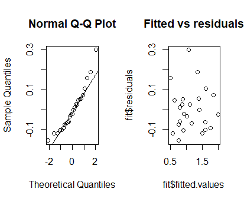

6 Multiple Linear Regression
6.1 Nitrate concentration
In order to analyze the effect of reducing nitrate loading in a Danish fjord, it was decided to formulate a linear model that describes the nitrate concentration in the fjord as a function of nitrate loading, it was further decided to correct for fresh water runoff. The resulting model was $$ Y_i = \beta_0+\beta_1x_{1,i}+\beta_2x_{2,i}+ \varepsilon_i , \qquad \varepsilon_i\sim N(0,\sigma^2) $$
where Y_i is the natural logarithm of nitrate concentration, x_{1,i} is the natural logarithm of nitrate loading, and x_{2,i} is the natural logarithm of fresh water run off.
a)
Which of the following statements are assumed fulfilled in the usual multiple linear regression model?
- \varepsilon_i = 0 for all i = 1, ..., n, and \beta_j follows a normal distribution
-
E[x_1] = E[x_2] = 0 and V[\varepsilon_i] = \beta^2_1
-
E[\varepsilon_i] = 0 and V[\varepsilon_i] = \beta^2_1.
- \varepsilon_i is normally distributed with constant variance, and \varepsilon_i and \varepsilon_j are independent for i \ne j. Yes
- \varepsilon_i = 0 for all i = 1, ..., n, and x_j follows a normal distribution for j = \{1, 2\}
Answer: only 4. is correct, because this is the usual assumption about the errors
b)
The parameters in the model were estimated in R and the following results are available (slightly modified output from summary):
> summary(lm(y ~ x1 + x2))
Call:
lm(formula = y ~ x1 + x2)
Coefficients:
Estimate Std. Error t value Pr(>|t|)
(Intercept) -2.36500 0.22184 -10.661 < 2e-16
x1 0.47621 0.06169 7.720 3.25e-13
x2 0.08269 0.06977 1.185 0.237
---
Residual standard error: 0.3064 on 237 degrees of freedom
Multiple R-squared: 0.3438,Adjusted R-squared: 0.3382
F-statistic: 62.07 on 2 and 237 DF, p-value: < 2.2e-16
What are the parameter estimates for the model parameters (\hat\beta_i and \hat\sigma^2) and how many observations are included in the estimation?
- And there are 240 observations included in the estimation, because the number of degrees of freedom (237) is equal n-(p+1), where p=2 (because of \hat\beta_2)
c)
Calculate the usual 95% confidence intervals for the parameters (\beta_0,\beta_1, and \beta_2)
By method 6.5 confidence intervals for the parameters are given by:
So:
# The example of Beta0 calculation in R
alpha <- 0.05
beta <- -2.36500
sigmabeta <- 0.22184
c( beta - qt((1-alpha/2), df=237)*sigmabeta,
beta + qt((1-alpha/2), df=237)*sigmabeta )
-2.80203 -1.92797
d)
On level \alpha= 0.05 which of the parameters are significantly different from 0, also find the p-values for the tests used for each of the parameters?
- By using the summary in the R output we can conclude that only \beta_0 and \beta_1 are significantly different from 0, because these parameters have very low \text{p-value} (very strong evidence against the null hypothesis in both cases)
6.2 Multiple linear regression model
The following measurements have been obtained in a study:
D <- data.frame(
x1=c(0.58, 0.86, 0.29, 0.20, 0.56, 0.28, 0.08, 0.41, 0.22, 0.35,
0.59, 0.22, 0.26, 0.12, 0.65, 0.70, 0.30, 0.70, 0.39, 0.72,
0.45, 0.81, 0.04, 0.20, 0.95),
x2=c(0.71, 0.13, 0.79, 0.20, 0.56, 0.92, 0.01, 0.60, 0.70, 0.73,
0.13, 0.96, 0.27, 0.21, 0.88, 0.30, 0.15, 0.09, 0.17, 0.25,
0.30, 0.32, 0.82, 0.98, 0.00),
y=c(1.45, 1.93, 0.81, 0.61, 1.55, 0.95, 0.45, 1.14, 0.74, 0.98,
1.41, 0.81, 0.89, 0.68, 1.39, 1.53, 0.91, 1.49, 1.38, 1.73,
1.11, 1.68, 0.66, 0.69, 1.98)
)
It is expected that the response variable y can be described by the independent variables x_1 and x_2. This imply that the parameters of the following model should be estimated and tested
a)
Calculate the parameter estimates (\beta_0, \beta_1, \beta_2, and \sigma^2), in addition find the usual 95% confidence intervals for \beta_0,\beta_1 and \beta_2.
> fit <-lm(y ~ x1 + x2, data = D)
> summary(fit)
Call:
lm(formula = y ~ x1 + x2, data = D)
Residuals:
Min 1Q Median 3Q Max
-0.15493 -0.07801 -0.02004 0.04999 0.30112
Coefficients:
Estimate Std. Error t value Pr(>|t|)
(Intercept) 0.433547 0.065983 6.571 1.31e-06 ***
x1 1.652993 0.095245 17.355 2.53e-14 ***
x2 0.003945 0.074854 0.053 0.958
---
Signif. codes: 0 ‘***’ 0.001 ‘**’ 0.01 ‘*’ 0.05 ‘.’ 0.1 ‘ ’ 1
Residual standard error: 0.1127 on 22 degrees of freedom
Multiple R-squared: 0.9399, Adjusted R-squared: 0.9344
F-statistic: 172 on 2 and 22 DF, p-value: 3.699e-14
> confint(fit, level=0.95)
2.5 % 97.5 %
(Intercept) 0.2967067 0.5703875
x1 1.4554666 1.8505203
x2 -0.1512924 0.1591822
b)
Still using confidence level \alpha= 0.05 reduce the model if appropriate
Since the confidence interval for \beta_2 cover zero and the \text{p-value} is much larger than 0.05, the parameter should be removed from the model to get the simpler model:
The parameter estimates in the simpler model are:
> fit <- lm(y ~ x1, data =D)
> summary(fit)
Call:
lm(formula = y ~ x1, data = D)
Residuals:
Min 1Q Median 3Q Max
-0.15633 -0.07633 -0.02145 0.05157 0.29994
Coefficients:
Estimate Std. Error t value Pr(>|t|)
(Intercept) 0.43609 0.04399 9.913 9.02e-10 ***
x1 1.65121 0.08707 18.963 1.54e-15 ***
---
Signif. codes: 0 ‘***’ 0.001 ‘**’ 0.01 ‘*’ 0.05 ‘.’ 0.1 ‘ ’ 1
Residual standard error: 0.1102 on 23 degrees of freedom
Multiple R-squared: 0.9399, Adjusted R-squared: 0.9373
F-statistic: 359.6 on 1 and 23 DF, p-value: 1.538e-15
And both parameters are now significant.
c)
Carry out a residual analysis to check that the model assumptions are fulfilled.
It seems that there are no strong evidence against the assumptions, the qq-plot is are a straight line and the are no obvious dependence between the residuals and the fitted values, and we conclude that the assumptions are fulfilled.
par(mfrow=c(1,2))
qqnorm(fit$residuals)
qqline(fit$residuals)
plot(fit$fitted.values, fit$residuals, main="Fitted vs residuals")

## Walley
library(MESS)
qqwrap <- function(x, y, ...){
stdy <- (y-mean(y))/sd(y)
qqnorm(stdy, main="", ...)
qqline(stdy)}
wallyplot(fit$residuals, FUN=qqwrap, ylim=c(-3,3))
d)
Make a plot of the fitted line and 95% confidence and prediction intervals of the line for x_1 \in [0, 1] (it is assumed that the model was reduced above).
par(mfrow=c(1,1))
x1new <- seq(0,1,by=0.01)
pred <- predict(fit, newdata=data.frame(x1=x1new),
interval="prediction")
conf <- predict(fit, newdata=data.frame(x1=x1new),
interval="confidence")
plot(x1new, pred[ ,"fit"], type="l", ylim=c(0.1,2.4),
xlab="x1", ylab="Prediction")
lines(x1new, conf[ ,"lwr"], col="green", lty=2)
lines(x1new, conf[ ,"upr"], col="green", lty=2)
lines(x1new, pred[ ,"lwr"], col="red", lty=2)
lines(x1new, pred[ ,"upr"], col="red", lty=2)
legend("topleft", c("Prediction","Confidence band","Prediction band"),
lty=c(1,2,2), col=c(1,3,2), cex=0.7)